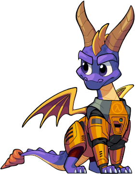

While Spyro was relaxing after his last adventure, a portal that hasn't been seen before
appeard. Upon checking it out he ended up at the Black Mesa Research Facilty!
|
 |
|---|
Why Half-Life of all games?
It’s the game I’m most familiar with in terms of well… everything so that’s why.
Why is this using Xash3D?
Steam Half-Life isn’t all that great, and while you can dance around it’s limitations, it honestly isn’t worth my time when there's a good alternative that is already fully open.
Why is it not on Source Engine™?
Because Source is bad. Sorry not sorry.
Will there be a Sequel or Year of the Dragon 2 of any kind?
Nope.
When will the mod be finished?
Not 100% sure, but I’d like the final release to be out before the end of 2024.
Will this release on Steam?
No. I do not have permission from Activision obviously so I can’t legally put it on Steam.
Will Spyro encounter Gordon Freeman at some point?
Probably not. I think that Gordon never got teleported back to earth after the resonance cascade. That’s why the scientists looked to a dragon to save the day!
Will this feature the full Half-Life campaign?
No. I don’t see the full Half-Life campaign being that enjoyable, and would be much more work.
So, what will the campaign comprise of?
Essentially you’d have a hub world similar to that of a typical Spyro game. Then you’d have a selection of 10 or so chapters from Half-Life, and it’s expansions. I still have to finalize the list, but expect something like that.
How did you manage to make the camera in third person?
Well, Half-Life does have a really basic 3rd person mode. It has no easing, or collision with the world of any kind which isn’t good. I’ve been able to get it mostly how I want it with a lot of reprogramming, and hacks.
What’s the development cycle for YOTD?
It usually revolves around working on it, yelling, and then sleeping. Usually in that order.
Will you also make a crossover mod for Crash, Ratchet & Clank, Jak, etc?
Nope.
Will Spyro be able to hold a gun in his mouth for a weapon?
Probably not.
What do you plan on doing after this mod is completed?
I probably won’t venture into Half-Life modding anymore, or modding in general. I have original game ideas I want to pursue, and also start a metal band. I’ll figure it out when I get there.
Will you bring back Shaft?
Yes but actually no.
Will there be more easter eggs like in the OC demo?
Yes!
Will this mod have custom campaign support?
That’s a post release plan, but it’s subject to change. If it does make it in, I want it to be similar to Cry of Fear.
Will this mod feature a SDK of its own?
I still plan to release one after the next demo or post final release.
Do you accept donations?
Yes I do thanks for asking! You can find a PayPal donation link here.
Are you open to interviews, or more questions about the mod?
Yes, feel free to send me a message on Twitter, Discord, or Steam.